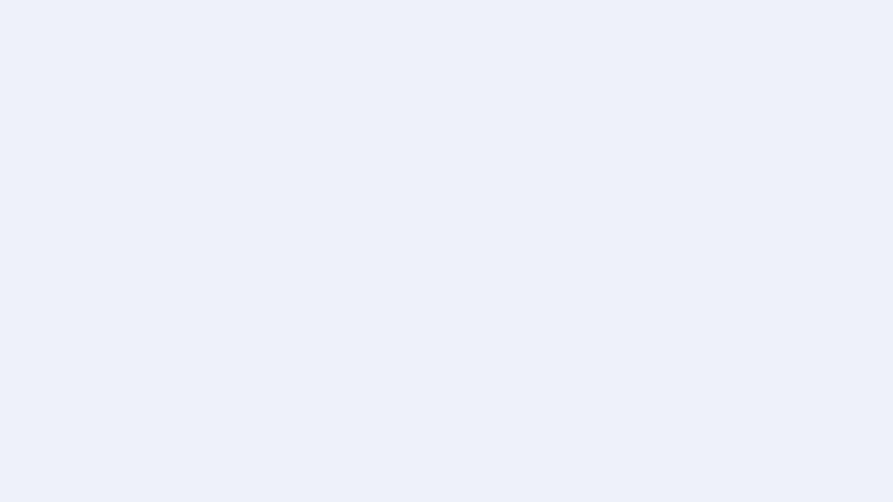

NEET UG is moving to a computer-based test from 2027. This free simulator replicates the exact NTA CBT interface — question palette, mark for review, on-screen timer, auto-submit — so nothing surprises you on exam day.
Works offline after first visit · Phone & laptop · Import your own PYQ banks
After the 2026 paper leaks, the government confirmed it: NEET UG moves to a computer-based test. Every topper is now practicing on-screen. You should too.
Question order and answer options are shuffled per candidate. Familiarity with the on-screen flow becomes a real advantage.
The palette, the review system, the auto-submit countdown — all now happen inside the exam software. Practicing the interface is part of preparing.
Multiple shifts across the day mean more seating, but also more variance. The simulator trains you to perform under any condition.
This simulator was built as an NTA-interface replica — down to the palette colors, the mark-for-review flow, and the auto-submit overlay.
Question palette, mark-for-review, save-and-next, auto-submit — a faithful replica of the exam software.
Real 180-question countdown with a time-up overlay, so you learn to manage the clock under pressure.
Installable PWA. Works on any device, offline after first visit, no account required.
Bring your own previous-year question banks in a simple format. Practice what you actually need.
All data lives on your device. No accounts, no tracking, no uploads.
NTA-style pre-exam screens, candidate info panel, and the full flow — not just questions on a page.
Visit neet-cbt.vercel.app on your phone or laptop. No sign-up.
Start with the built-in questions or import your own PYQ bank.
Mark questions for review, watch the timer, and learn the CBT flow.

The simulator in action — question palette, mark-for-review, live timer.
Yes. Completely free and open source (MIT). No account, no ads, no hidden costs — and it works offline after your first visit.
No. This is an independent, free practice tool that replicates the NTA computer-based test interface. It is not affiliated with or endorsed by the NTA, NMC, or any government body.
Yes. It's a progressive web app (PWA) — install it to your home screen and it behaves like a native app. Works on Android, iPhone, and desktop browsers.
Yes. You can import your own question banks (including previous-year questions) in a simple supported format, then take them in the CBT interface.
Yes. Following the 2026 paper leaks, the Union Education Ministry confirmed NEET UG will move to a computer-based format from 2027, with randomized questions and multi-shift scheduling.
It ships with practice banks out of the box, and you can import as many additional banks as you like — including your own PYQ sets.